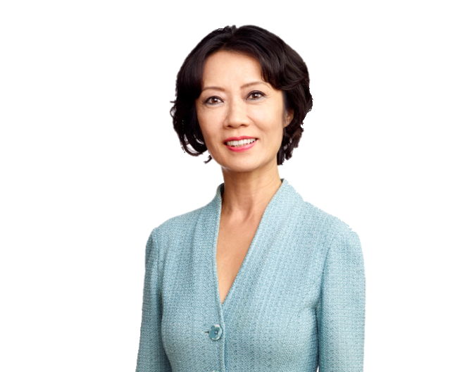
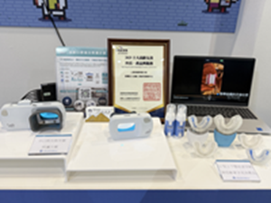
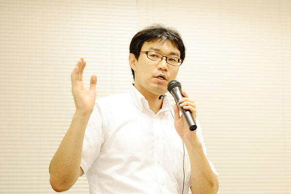
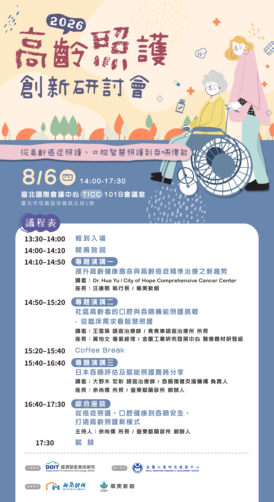
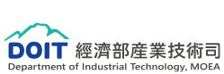
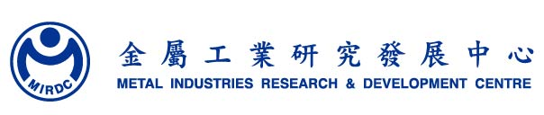
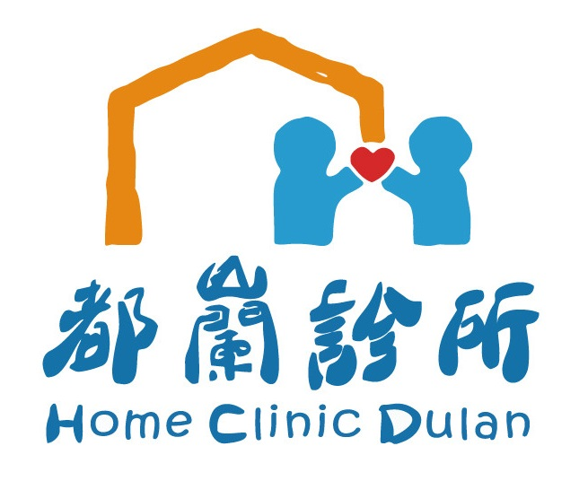

高齡癌症照護
掌握精準治療與腫瘤免疫研究趨勢，回應高齡患者的複雜照護需求。
AGING CARE INNOVATION FORUM
從高齡癌症照護、口腔智慧照護到吞嚥復能
從「延長壽命」走向「提升生活品質」，串聯疾病治療、口腔健康、吞嚥安全與營養支持，探索高齡照護的新未來。
ABOUT THE FORUM
全球高齡照護正由單一疾病治療，走向跨專業、全人與生活功能導向。高齡癌症照護、口腔健康、吞嚥安全與營養支持彼此緊密相連，共同影響高齡者的治療成效、生活品質與照護負擔。
本次研討會邀集美國、日本與臺灣專家，分享國際趨勢、臨床經驗與創新照護模式，促進醫療、長照、學研與健康科技產業交流，共同開啟跨域合作新契機。
掌握精準治療與腫瘤免疫研究趨勢，回應高齡患者的複雜照護需求。
以 AI 與非接觸檢測，強化口腔清潔、功能評估與前端風險辨識。
連結吞嚥評估、復健訓練與營養支持，守護高齡者的進食安全。
FEATURED SPEAKERS
匯聚美國、日本與臺灣專家，從尖端研究到照護實務，展開跨域對話。

專題演講一
演講題目高齡癌症照護與精準治療新趨勢
Billy Wilder Endowed Professor in Beckman Research Institute at City of Hope Comprehensive Cancer Center
City of Hope為美國國家癌症研究院（NCI）指定的綜合癌症中心，整合癌症照護、研究與創新。Hua Yu教授長期深耕STAT3、腫瘤免疫與治療抗藥性研究，並開發RNA、抗體及CRISPR等細胞內遞送平台，推動新一代癌症標靶與免疫治療。

專題演講二
演講題目金屬中心好嚥／口腔智慧照護方案技術
口腔照護暨吞嚥賦能智慧方案研發團隊
團隊研發「口腔照護暨吞嚥賦能智慧方案」，榮獲「2025年十大高齡友善科技產品」。方案結合AI與非接觸檢測，涵蓋牙菌斑偵測、口腔清潔指引、吞嚥訓練與遊戲化復健，協助長者維持口腔功能與進食安全。

專題演講三
演講題目日本吞嚥照護與營養支持實務經驗
吞嚥復健支援機構（嚥下リハサポート）代表／語言治療師
大野木宏彰為日本吞嚥復健支援機構代表、語言治療師及日本攝食吞嚥復健學會認定士。長期投入吞嚥評估、頸部聽診、誤吸預防與臨床教育，曾任醫院及居家照護機構復健相關職務，並於日本各地推動吞嚥照護培訓，出版多部專業著作。
PROGRAM
Dr. Hua Yu｜City of Hope Comprehensive Cancer Center
座長｜華美新創 汪康熙 執行長
金屬中心口腔智慧團隊
大野木宏彰｜吞嚥復健支援機構代表／語言治療師
座長｜臺東都蘭診所 余尚儒 所長
主持人、三位講者及醫療／長照代表
主辦單位保留議程內容及活動流程調整之權利。

ORGANIZERS



FROM LONGEVITY TO QUALITY OF LIFE